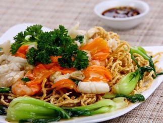

Cùng bắt tay làm thử thôi nào!
Nguyên liệu làm mì xào hải sản
- Mì trứng tươi: 500g (nếu bạn sử dụng mì trứng khô thì phải làm mềm trước khi xào nhé).
- Tôm sú: 400g.
- Mực ống: 300g.
- Chả cá viên: 300g.
- Rau cải xanh: 500g.
- Giá đậu sống: 250g.
- Đậu ve: 200g;
- Gừng tươi, 3 quả ớt đỏ, 1 củ cà rốt, 1 củ hành tây, hành lá.
- Gia vị: hạt nêm, bột ngọt, tiêu, ớt bột, nước mắm, đường, dầu ăn, nước tương, hành khô, tỏi.
Sơ chế nguyên liệu
- Hành khô, tỏi: Làm sạch, băm nhuyễn.
- Mì trứng: Nếu bạn sử dụng mì trứng tươi thì không cần làm mềm. Trường hợp bạn sử dụng mì trứng khô, thì hãy luộc mì với 1 thài dầu ăn (để mì có độ nuột nà và không bị kết dính) đổ ra rôt, xả qua lại với nước lạnh, để ráo.
- Tôm: làm sạch, bóc vỏ.
- Mực: làm sạch, cắt miếng vừa ăn.
- Ướp tôm, mực với ½ thìa hạt nêm, ½ thìa bột ngọt, ¼ thìa tiêu, ½ thìa đường, ¼ thài dầu ăn, ½ thìa hành, toi đã băm nhuyễn.
- Chả cá viên: Cắt làm đôi.
- Rau cải xanh: Làm sạch, cắt khúc 4cm.
- Giá đậu sống: Rửa sạch, nhặt rễ, để ráo.
- Gừng tươi: Làm sạch, gọt vỏ, thái chỉ.
- Hành lá: Làm sạch, cắt khúc 3cm.
- Đậu ve: làm sạch, cắt khúc 3cm, cứa nhẹ.
- Cà rốt: Gọt vỏ, rửa sạch, Tỉa hoa dáng dài hoặc dáng tròn tùy thích.
- Hành tây: Bổ cau miếng nhỏ.
- Ớt trái: tỉa hoa trang trí 1 quả, 2 quả còn lại thái lát.
Thực hiện món mì xào hải sản
- Phi thơm dầu ăn với ½ thìa hành, tỏi băm nhuyễn, cho tôm, mực vào xào lăn qua, khi vừa chín tái thì đổ ra đĩa, để riêng;
- Tiếp tục phi thơm dầu ăn với ½ thìa hành tỏi băm nhuyễn và một ít ớt bột, cho cá viên chiên vào xào nhẹ tay khoảng 3 phút, cho cà rốt, đậu ve vào xào đến khi chín tới bạn đổ ra đĩa, để riêng;
- Tiếp đó, bạn phi dầu với gừng tươi thái chỉ (đối với các món ăn hải sản, một chút gừng tươi sẽ là gia vị điều hòa giúp bạn khống chế được tính mát của hải sản đồng thời cho món ăn có thêm vị ngon đặc trưng của nó);
- Cho cải xanh, giá đậu sống, mì trứng vào đảo khoảng 1 phút thì thì cho hỗn hợp tôm, mực, chả cá viên, đậu ve, cà rốt đã xào chín ở trên vào, nêm thêm 1 thìa hạt nêm, 1 thìa nước mắm, 1 thìa bột ngọt, 3 thìa nước sôi, ½ thìa dầu ăn rưới nhẹ lên trên để tạo sự nuột nà cho món ăn;
- Đảo nhẹ hỗn hợp trên chảo với lửa lớn khoảng 30 giây thì tắt bếp, cho hành lá, hành tây lên trên, rắc nhẹ ½ thìa tiêu để tạo mùi thơm là bạn đã hoàn thành món mì xào hải sản rồi đấy.
Yêu cầu món ăn
- Món mì xào hải sản có màu sắc đẹp mắt, vị vừa ăn, mì không bị khô, lượng nước vừa sít.
- Các thành phần làm món mì xào ngấm đều gia vị, vùa chín tới, không quá mềm, nhìn sợi mì óng ả, nuột nà.
- Rau cải, đậu ve có màu xanh tươi hấp dẫn và có độ giòn ngon.
Trình bày và thưởng thức món ăn
- Khi bày món mì xào hải sản ra đĩa bạn nên cho mì nằm phía dưới và các thành phần khác lên trên để tạo ra vẻ hấp dẫn của món ăn, cho thêm ớt tỉa hoa lên trên và rắc nhẹ một chút tiêu để trang trí nữa nhé;
- Cho ớt thái lát vào một chén nhỏ và rót nước tương vào để ăn kèm, món ăn sẽ thêm phần đậm đà.
Với hướng dẫn làm mì xào hải sản ngon lạ các bạn có thể dễ dàng thực hiện nó vào bất kể khi nào mình thích, đơn giản và thật dễ dàng. Món mì xào hải sản này thật sự rất phù hợp để bạn đổi khẩu vị cho cả gia đình ăn ngon miệng hơn đấy. Hãy chế biến, thưởng thức và cảm nhận nhé. Chúc gia đình bạn có một bữa ăn thật ngon miệng với món ăn hấp dẫn này.